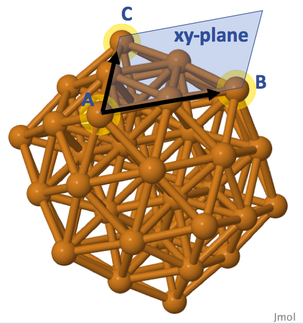

Ligands on a Cluster
Attaching Ligands to a Cluster Effectively
Cluster science community has actively studied thiolates-protected gold clusters because of their interesting properties and potential applications. This type of cluster comprises of a metallic core with ligands covering it. Ligands, molecules attached to a cluster core, are important to decide the cluster properties. An example of thiolates (ligand) protected cluster, Au25(SCH2CH2C6H5)18-, has a metallic core of gold (Au13) icosahedron as shown below.
Figure 1: Au13 icosahedral core.
Visualizations of 3D molecules of this article are based on JSmol.
You could rotate the molecule, zoom-in or right-click for the other functionalities.
Au25(SCH2CH2C6H5)18- has its Au13 icosahedron (highlighted in lightgray) attached by six ligands as shown below. Individual ligand has a composition of RS-Au-SR-Au-SR (R=CH2CH2C6H5).
Color code: Dark gray (carbon), white (hydrogen), yellow (sulfur), gold (gold of ligand group), lightgray (gold icosahedron).
Each ligand connects with the gold icosahedron by bonding their two sulfur atoms to the gold surface. Attaching ligands to a cluster core manually by using a molecular visualizer (such as Jmol) is a repetitive task. Sometimes we are interested to study problems such as the catalytic behaviour of oxygen molecules at the surface of a cluster. We need to prepare a model by properly aligning oxygen molecules on top of the cluster surfaces. What if we need to attach tens of oxygen molecules to the cluster surfaces? This is a time consuming process by moving/clicking our computer pointers.
Using the Atomic Simulation Environment (ASE) package, I designed a program to automate the process of attaching ligands to cluster surfacees. The program has the following basic algorithmic steps:
- Determine the surface atoms of a given cluster.
- Select few surface atoms as the reference points for ligand. The selected atoms define the 'flat surface' that we place our ligand on top.
- Based on the atomic positions of a ligand defined with respect to the 'flat surface', perform appropriate rotations and translations to place the ligand on top of the selected surface.
Step 1: Determine the surface atoms of a cluster
It could be straightforward to check the total number of nearest neighbor atoms (coordination number) of an atom for this purpose. For example, in body-centered cubic crystal, the bulk atoms are surrounded by 8 nearest neighbor atoms, so the surface atoms will have coordination number less than 8. However, this can not be a definite rule for nanosized cluster because ligands can be arranged in different orientations surrounding the cluster core. The flexible arrangements let some non-surface atoms having different coordination numbers, and we hardly choose a coordination number as the cutoff.
Instead of atomic coordination numbers, we can refer to a number of points on a spherical surface (defined with respect to each atomic position). The program will check the proportion of points overlapped by the other atoms. Assuming that 95% of these points lie wihthin the spherical regions of the neighboring atoms, there is a high chance this particular atom is not a surface atom. Depending on user's preference get_surf_atoms() function can generate more/less points by manipulating the azimuth/polar angle intervals (dphi/dtheta parameters), and the sizes (radii) of spherical regions belong to each atomic element.
Figure 3: Points (dark pink) defined with respect to a single Au atom.
Step 2: Surface atoms spanning the flat surface
This step aims to define the reference axes, or the 'flat surface' spanned by the selected surface atoms. An option is to define a 'flat surface' by selecting three surface atoms. Referring to Cu55 icosahedral cluster as an example, Figure 4 shows that we can specify the atoms A and B as the x-axis of a 'flat surface'. Position of atom A is the origin (0, 0, 0) of the flat surface, and atom B is positioned at (rx, 0, 0) with rx as the distance between the atoms. Vectors AB (connecting atoms A and B) and AC can genereate a vector perpendiculr to the spanned surface by cross product operation. Together with the vector AB, this perpendicular vector defines the xz-plane, and the three surface atoms define the xy-plane of our chosen surface for the Cu55 cluster.
Instead of defining the xy-plane as shown in Figure 4, we can use the center point of our cluster to define the xz-plane, and thus the xy-plane can be defined acoordingly. Figure 5 illustrates this alternative way of defining a surface. Notice that the xz-plane will not be perpendicular intersected to the surface xy-plane spanned by the atoms A, B, C in Figure 4. The add_ligand() function offers this feature such that we can specify the indices of atoms A, B (sites) for defining the x-axis, and use the default option None for plane_atom parameter. If we want to define the xy-plane as shown in Figure 4, we can specify the index of atom C to plane_atom. The flexibility of this choise is to allow users having different orientations in their designed ligands.
Step 3: Placing a ligand on top of a surface
Our next task is to specify the atomic positions of our ligand to the ligand parameter of add_ligand() function. The add_ligand() function will first translate the whole cluster to have atom A positioned at (0, 0, 0). It will then perform rotation to align atoms A and B along the positive x-axis. Lastly, it will rotate the cluster such that it follows the xz-plane defined by plane_atom. After these operations, we include the atomic positions of desired ligand to the cluster, and finally this add_ligand() function will complete the reversed rotation and translation operations. This will complete the process of attaching a ligand to the chosen surface. Figure 6 demonstrates how we can define the atomic positions of an oxygen molecule with respect to the icosahedral surface of Cu55 cluster.
Example 1: Attach oxygen molecules to Cu55 cluster interactively
This example code available on my Github page presents a general example of attaching ligands interactively. I designed a helper function add_interactive() in prompting the user to indicate the selected surface atoms (surface) they wish to attach the ligand to. add_interactive() will generate a graphical user interface based on the ASE package, showing the imported cluster. The function will then suggest the following options for the user:
Please choose one of the following actions.
0 - Quit the program.
1 - Add a ligand to the surface of the cluster.
2 - Delete the ligand from the surface of the cluster.
3 - View the current system.
Based on the graphical interface, we can learn about the atomic indices of surface atoms we want to choose, as shown below.
This add_interactive() function only supports the case of using three atoms to define the surface (Figure 4). Let us pick the option 1 and specify the three indices for the first surface: 22 31 21. This defines sites as [22, 31], plane_atom as 21. Note that the atomic indices specified by the Python ASE program is different from the atomic indices specified by JSmol, because of the difference in the starting indices (Python=0, JSmol=1). Once we complete this step, the program will display our progress in a window named as "ase-temp.xyz". We can keep track whether our ligand is attached properly. If we make a mistake, we can choose the option 2 and to remove the undeired ligand. Let us continue to add the second oxygen molecule with sites=[31, 13], plane_atom=21. The following demonstrates the end result of attaching two oxygen molecules to the Cu55 cluster
Example 2: Attach RS-Au-SR ligand to Au13 cluster
We can take a step further by designing a scheme to automate the process of choosing the surface atoms. Let us refer to a thiolate monomer having the composition of RS-Au-SR (R=CH3). The structure of this simple ligand is shown below.
The automation process assumes that this ligand is attached to only two surface atoms which are second nearest neighbor to each other (this agrees with the experimental obervation as well). For a simple demonstration, let us pick the Au13 icosahedron (Figure 1) as our cluster core. The add_monomer() function and monomer() class are designed to generate this type of ligand. monomer() class basically contains the parameters specifying the properties of the monomer ligand. add_monomer() will first let the S-Au-S atoms placed along the xz-plane defined by sites. But having an angle parameter delta defined in monomer class will then displace S-Au-S slightly with respect to the xz-plane. The purpose of having this is to generate ligands of different orientations, as the starting points. We can also define the desired side group (parameter side-group), but we stick with methyl side group (R=CH3) in this example. ref_neighbor parameter specifies whether we will prefer using the common neighbor of the two atoms in defining the 'flat surface', or we refer to the center of point instead (Figure 5). In this example, ref_neighor=0 works better to have ligands properly aligned to the surfaces.
Lastly, we use create_monomers() by randomly picking two surface atoms which are second nearest neighbor to each other for the ligand attachment. The program will automatically generate the thiolate monomer, if the generated monomer does not overlap with the neighboring atoms. Or else, the generation process will restart until this process reaches the maximum number of attemps. User can define the maximum number of attempts should be made in the tries parameter. The automation process does not guarantee a perfect results with six monomers attached to all the surface atoms, but the program should work in most cases. The example code is available, and the end result of this automation process is the following cluster.